Primeiro módulo teórico da jornada rumo à primeira habilitação: a linguagem da sinalização viária. As famílias de placas (regulamentação, advertência e indicação), a sinalização horizontal, os semáforos, os espaços cicloviários, os dispositivos auxiliares, a sinalização temporária e a hierarquia da sinalização — com áudio-guia em todas as telas e verificação de aprendizagem em cada módulo. Aprovação com aproveitamento mínimo de 70%.
8 telas • 5 atividades • 45 min
8 telas • 5 atividades • 45 min
8 telas • 5 atividades • 45 min
8 telas • 5 atividades • 40 min
8 telas • 5 atividades • 50 min
Reconhecer os seis tipos de sinalização viária e a função de cada um · Distinguir as três famílias de placas pela cor e pelo formato · Associar cor e formato ao tipo de mensagem antes de ler o símbolo
Neste módulo: o trânsito como sistema de comunicação; os seis tipos de sinalização; as placas como mensageiras; as três famílias de placas; o código de cores e formatos que você lê em fração de segundo.
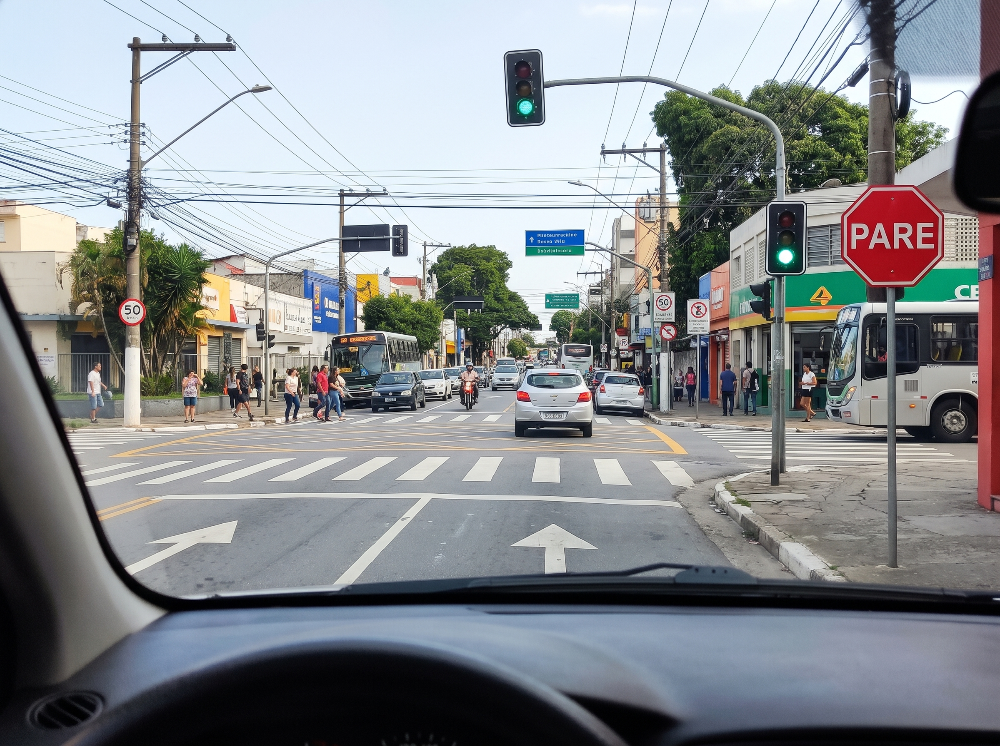
Você já parou para pensar em quantas mensagens recebe enquanto dirige? Placas coloridas, linhas no chão, semáforos piscando, símbolos que aparecem e desaparecem. Tudo isso forma um sistema de comunicação sofisticado, mas incrivelmente simples quando você aprende a "ler" essa linguagem.
A sinalização de trânsito não foi criada para complicar sua vida — muito pelo contrário. Ela existe para tornar o trânsito mais seguro, organizado e previsível. É como se cada placa, cada faixa no chão e cada semáforo fosse um amigo te dando dicas sobre o que vem pela frente.
E o melhor de tudo? Essa linguagem é universal em todo o Brasil. Uma placa "PARE" em Manaus significa exatamente a mesma coisa que uma placa "PARE" em Porto Alegre. Isso garante que você possa dirigir com confiança em qualquer lugar do país, sabendo que as regras são as mesmas para todos.
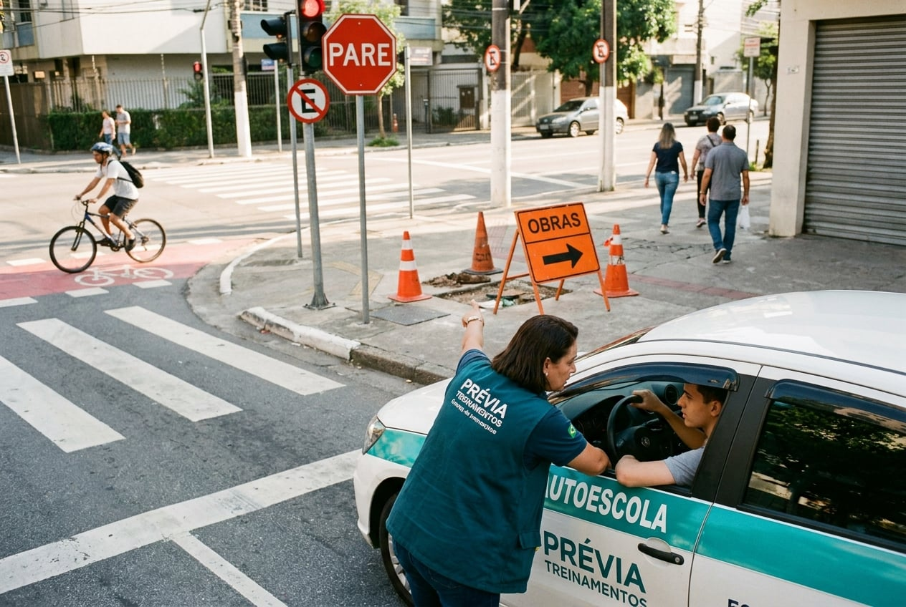
Cada tipo de sinalização tem personalidade e função específica, trabalhando junto para criar um sistema completo de comunicação no trânsito:
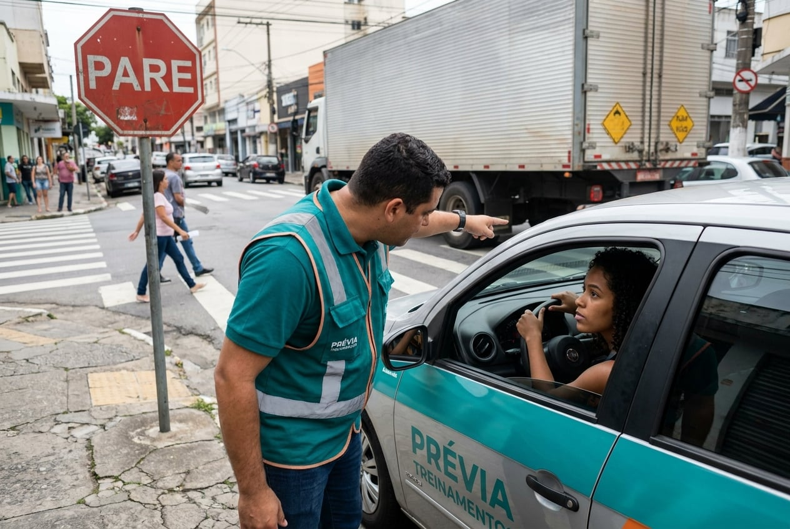
Quantas placas você acha que vê em um dia normal de direção? Provavelmente centenas! Elas estão por toda parte: nas esquinas, nas entradas de bairros, nas rodovias, nos estacionamentos. E cada uma delas está ali por um motivo muito específico: conversar com você.
Pense nas placas como mensageiras silenciosas que nunca tiram folga. Trabalham 24 horas por dia, 7 dias por semana:
A genialidade das placas está na simplicidade. Elas usam símbolos universais, cores estratégicas e formas distintas que podem ser compreendidas em frações de segundo — mesmo dirigindo a 80 km/h ou sob estresse. Não é preciso ler textos longos: uma olhada rápida e você já sabe o que fazer.
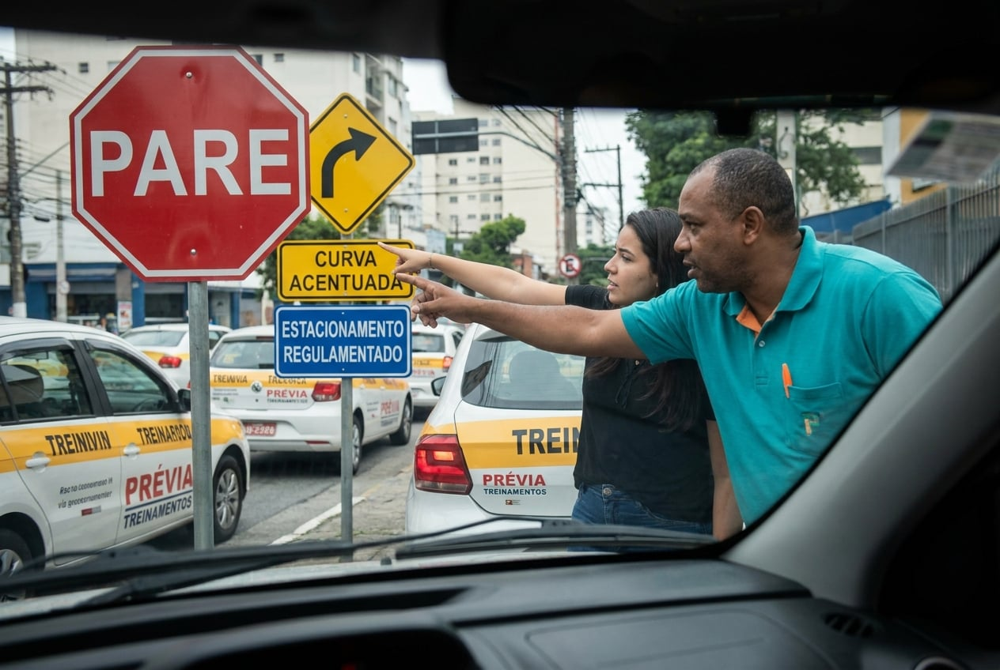
Assim como as famílias têm características próprias, cada grupo de placas tem sua cor marcante, formato especial e missão específica:
Placas de Regulamentação — as chefes do trânsito Mandam, proíbem e estabelecem regras que você deve seguir obrigatoriamente. São vermelho e branco, cores que gritam "atenção, isso é sério!". Desobedecer é infração.
Placas de Advertência — as vigilantes protetoras Avisam com antecedência sobre perigos e situações especiais que estão por vir. São amarelas brilhantes para que você as veja de longe e tenha tempo de reagir.
Placas de Indicação — as prestativas e amigas Orientam com informações úteis sobre direções, serviços e pontos de interesse. São azuis, verdes, marrons ou brancas, dependendo do tipo de informação.
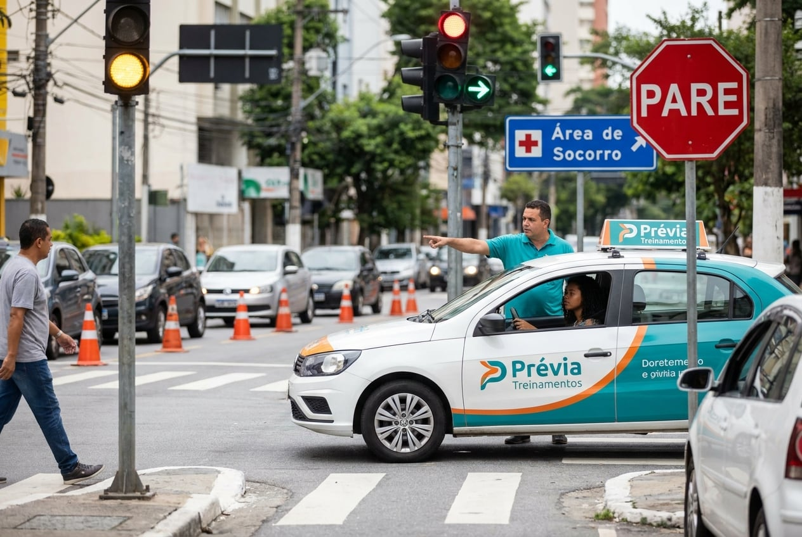
Associe a cor com a emoção! Essa associação mental vai te ajudar a reagir instintivamente:
É assim que motoristas experientes leem o trânsito: primeiro a cor, depois o formato e só então o símbolo.
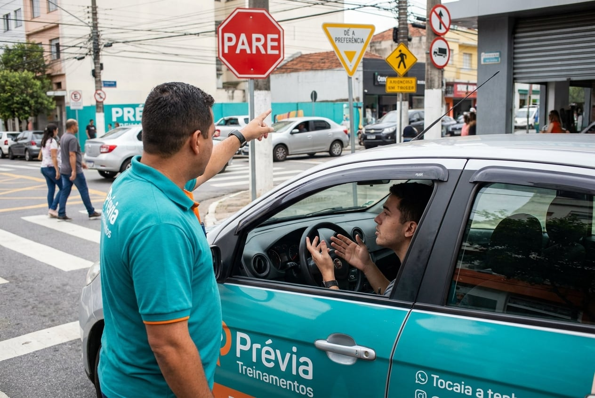
Além da cor, o formato da placa é mensagem pura — pensado para ser reconhecido mesmo quando a visibilidade é ruim:
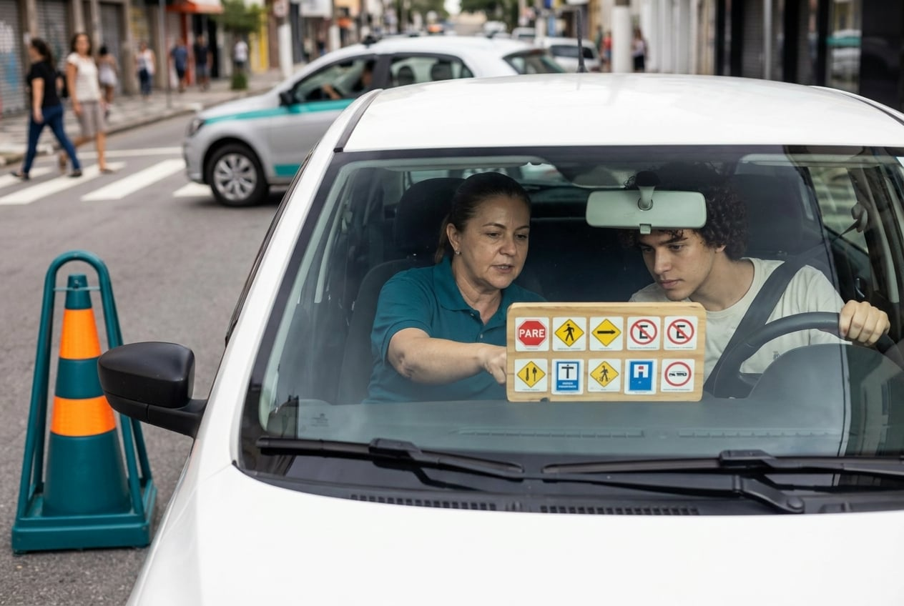
Você acabou de aprender o alfabeto do trânsito. A partir daqui, cada módulo aprofunda uma parte da linguagem.
Reconhecer o formato, as cores e a missão das placas de regulamentação · Diferenciar PARE de DÊ A PREFERÊNCIA e aplicar cada ordem corretamente · Distinguir proibido estacionar de proibido parar e estacionar
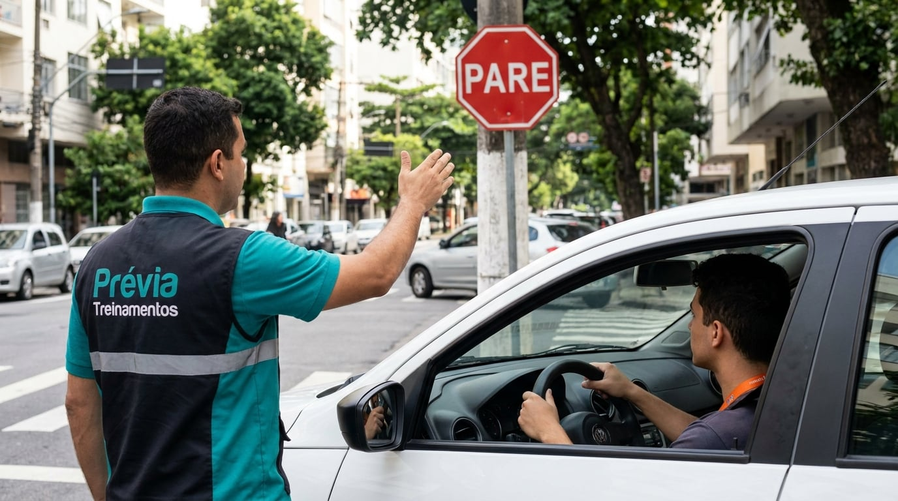
Neste módulo: a voz de comando do trânsito; formato, cores e missão; PARE × DÊ A PREFERÊNCIA; proibido estacionar × proibido parar e estacionar; sentido proibido e velocidade máxima; a galeria das ordens mais comuns do dia a dia.
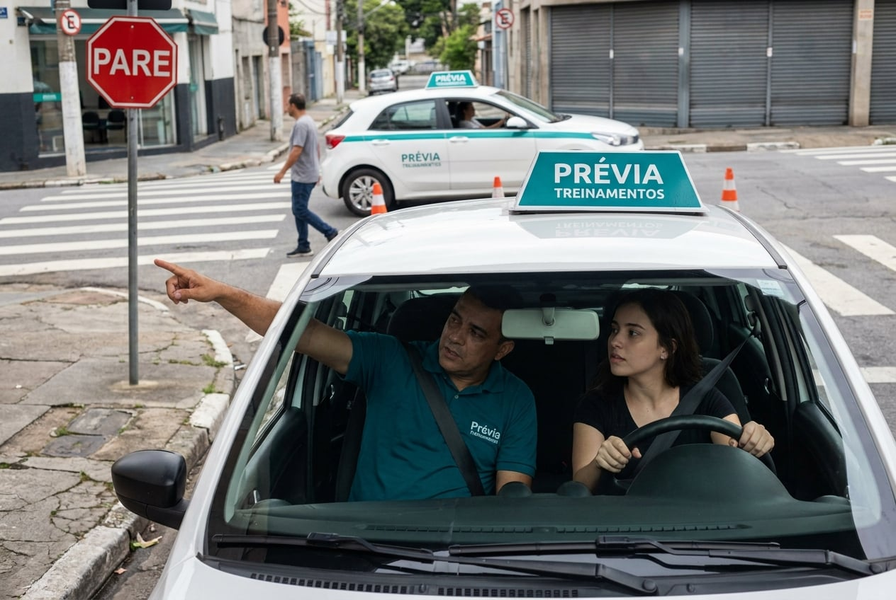
Quando você vê uma placa de regulamentação, preste muita atenção: não é uma sugestão, não é um conselho amigável. É uma ordem clara que você deve seguir. Ponto final.
Essas placas são a voz de comando do trânsito:
Desobedecer não é apenas imprudência: é infração que gera multa, pontos na carteira e aumenta drasticamente o risco de acidentes graves.
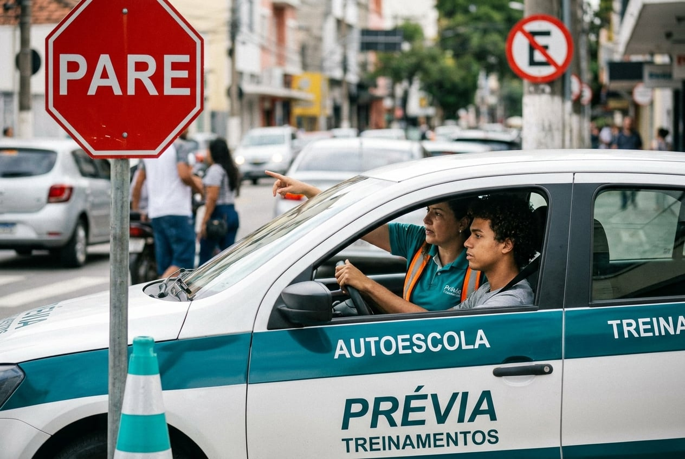
Formato: Geralmente circular — com duas exceções ilustres: a placa PARE, octogonal (oito lados), e o DÊ A PREFERÊNCIA, triângulo invertido.
Cores: Combinação de vermelho, branco e preto. A faixa diagonal vermelha sobre um símbolo significa proibição.
Missão: Determinar obrigações, proibições e restrições. São leis expressas visualmente.
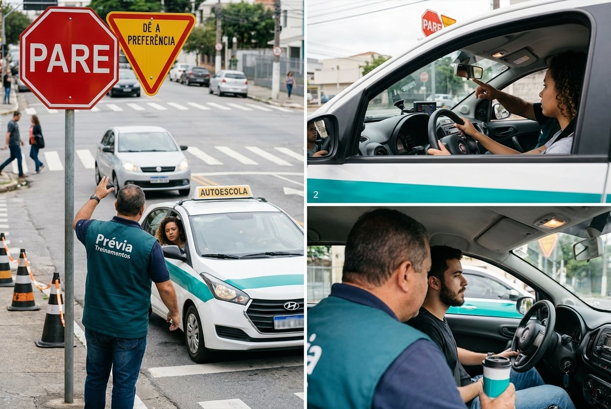
PARE (R-1) — parada obrigatória: Reduzir completamente a velocidade até parar, observar todos os lados e só seguir quando seguro. Não existe "passar devagar": tem que imobilizar o carro.
DÊ A PREFERÊNCIA (R-2) — prioridade do outro: Aproxime-se com cautela, reduza e ceda passagem. Só pare se o tráfego da via preferencial exigir.
A diferença em uma frase: no PARE, a parada é obrigatória mesmo deserto; no DÊ A PREFERÊNCIA, parar só é necessário se houver tráfego com prioridade.
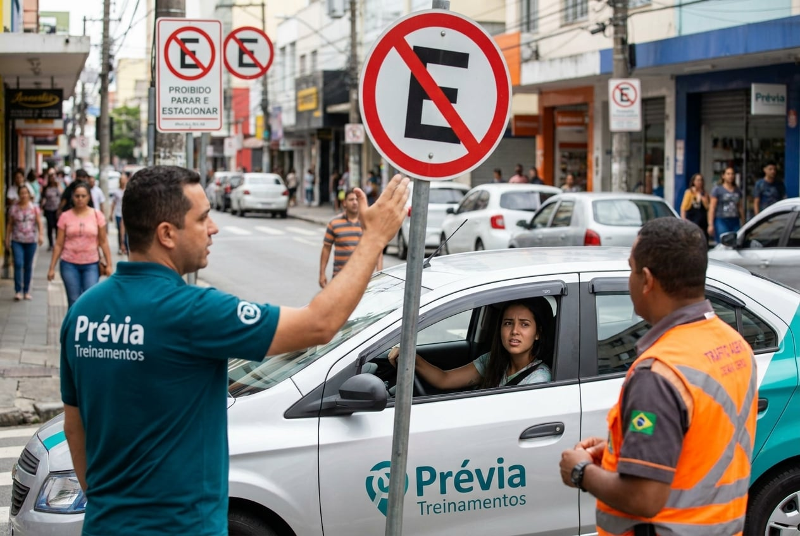
Proibido Estacionar (R-6a) — o "E" cortado: Não pode deixar o carro estacionado, mas pode realizar paradas rápidas para embarque ou desembarque.
Proibido Parar e Estacionar (R-6c) — "X" vermelho: Proibição total. Não pode parar nem por um segundo; a via deve ficar 100% desobstruída.
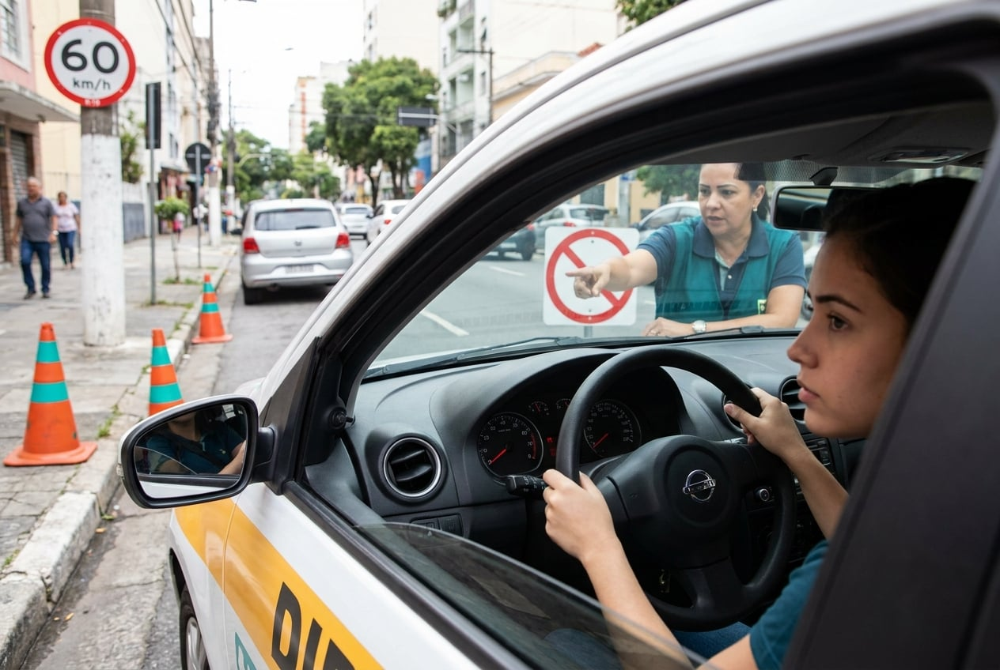
Sentido Proibido (R-3): Não entre. Os veículos transitam no sentido contrário, e a contramão gera colisões frontais de altíssima letalidade.
Velocidade Máxima Permitida (R-19): Limite teto daquele trecho sob condições climáticas ideais. Chuva, cerração ou pista molhada exigem velocidade bem abaixo do número indicado.
Principais placas da categoria:
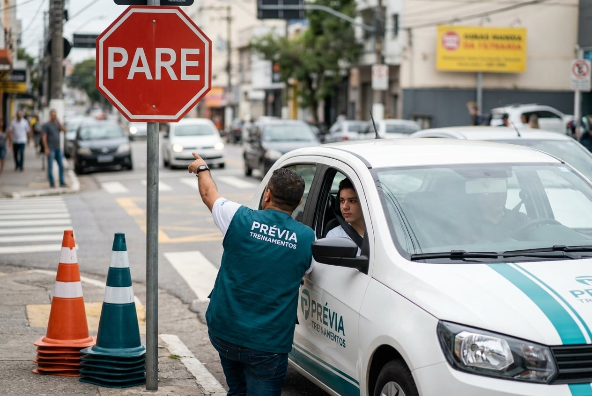
Viu borda vermelha? O comportamento é simples: obediência imediata. Elas não negociam nem orientam; impõem deveres inegociáveis para salvar vidas.
Reconhecer o losango amarelo e o papel preventivo das placas de advertência · Reagir corretamente aos avisos de curvas, relevo de pista e encontros de vias · Redobrar a atenção nos avisos de presença de pessoas: escolares, pedestres e ciclistas
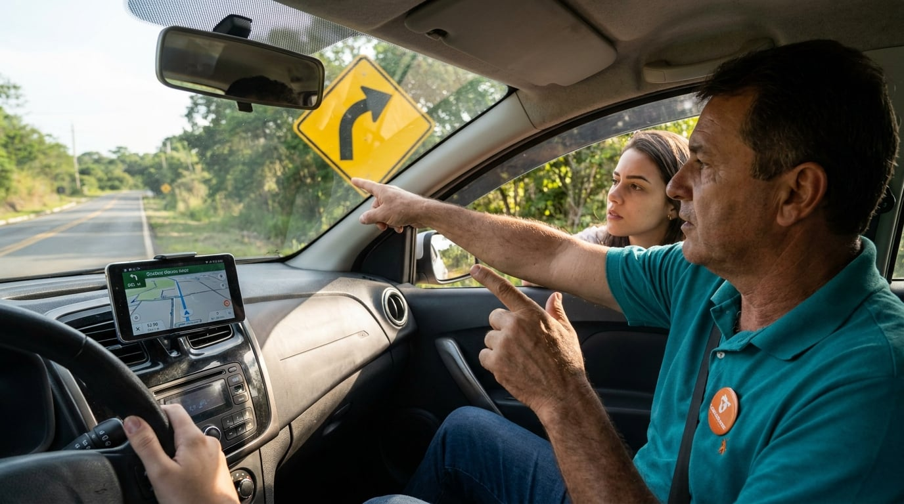
Neste módulo: o papel preventivo da família amarela; como reconhecer e onde aparecem; curvas e pistas sinuosas; relevo da pista; encontros de vias e semáforo à frente; avisos de presença de pessoas; a galeria A essencial.
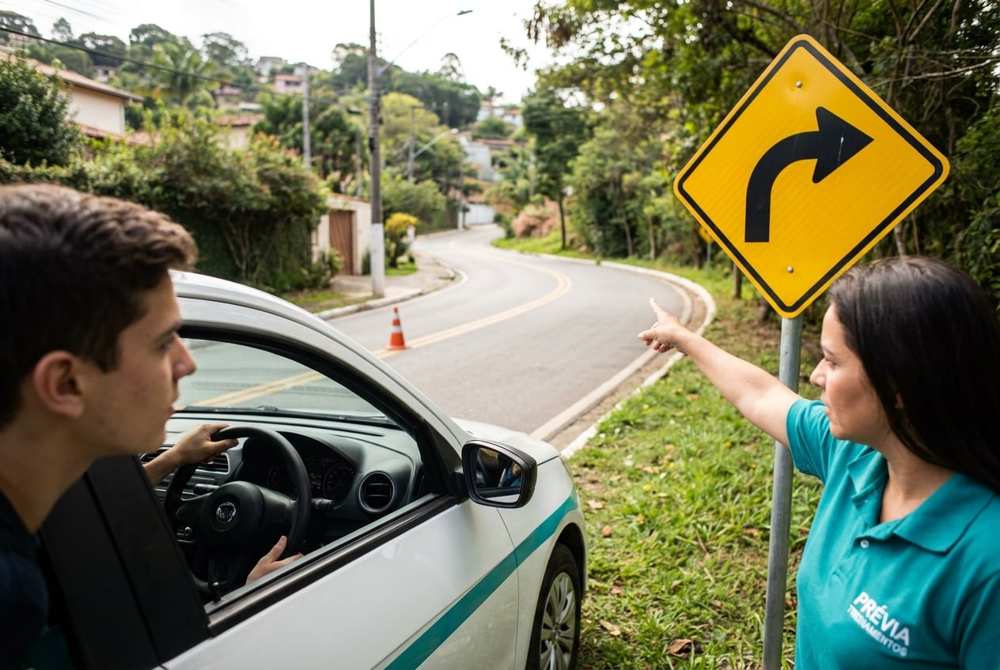
Se as placas de regulamentação são as "chefes" que ordenam, as de advertência são suas "amigas protetoras": surgem antes do perigo, dando tempo valioso para reação.
Não impõem penalidades diretamente, mas antecipam o que vem pela frente: curvas cegas, trechos escorregadios e desníveis.
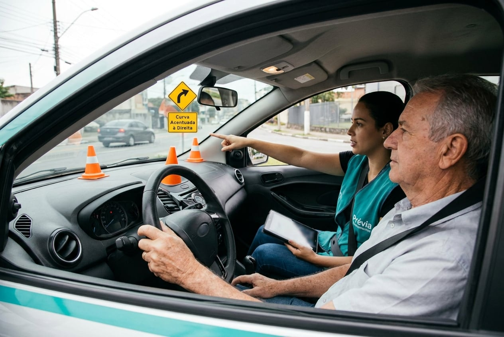
Como identificar: Formato de losango, cor de fundo amarela com símbolos em preto.
Pergunta essencial ao avistar uma placa dessa família: "O que vem à frente e o que devo antecipar no meu veículo?"
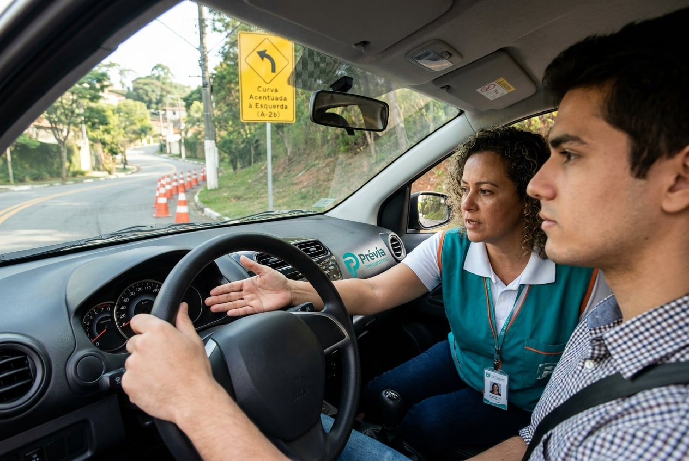
Regra de ouro nas curvas: reduza a velocidade na reta, antes de entrar na curva. Frear bruscamente dentro da curva desloca o peso do carro, destraciona as rodas e provoca derrapagens fatais.
Lombada (A-18) e Depressão (A-19): Reduza a marcha e a velocidade para absorver o desnível com segurança mecânica.
Aclive Acentuado (A-20b): Se o veículo for manual, reduza para uma marcha mais forte antes da subida para não perder tração.
Declive Acentuado (A-20a): Use o freio-motor (engrenado em marcha forte). Jamais desça desengrenado (banguela).
Bifurcações, entroncamentos e cruzamentos sinalizados com placas amarelas (como A-6, A-8, A-12, A-14) alertam que trajetórias vão se cruzar. Tire o pé do acelerador e verifique a preferência antes de alcançar o ponto de contato.
Placas de escolares (A-33a/b), pedestres (A-32a/b) e ciclistas (A-30a) exigem o mais alto patamar de prudência. Crianças podem cruzar a via imprevisivelmente; o pé deve estar pronto para acionar o freio imediatamente.
As placas de advertência salvam vidas exatamente porque eliminam o fator surpresa. Ler a sinalização amarela é dirigir com visão de futuro.
Reconhecer o papel informativo das placas de indicação e seu formato retangular · Distinguir a missão de cada cor: azul, verde, branca e marrom · Ler painéis reais de direção, distância e serviços
Neste módulo: placas informativas; formato retangular; divisão funcional das 4 cores (azul, verde, marrom e branca); leitura de painéis rodoviários e de serviços.
Essas placas não impõem mandamentos nem avisam de perigos iminentes. Elas orientam rotas, localizações, serviços úteis e pontos turísticos.
Identificação: Nomes de avenidas, pontes e rodovias.
Serviços Auxiliares: Hospitais, restaurantes, abastecimento, mecânicos (ícones claros com distâncias indicadas).
Fiscalização: Postos de pesagem e de policiamento rodoviário.
São as placas de orientação por excelência: mostram nomes de municípios, setas de direções em trevos e quilometragens restantes até o destino. (Em rodovias concedidas ou vias expressas, placas de orientação também podem utilizar fundo azul).
Placas educativas com frases de conscientização: "Não feche o cruzamento", "Use o cinto no banco traseiro", "Motociclista, use sempre o capacete". São posicionadas exatamente onde o comportamento preventivo se faz mais urgente.
Fundo marrom é exclusivo para atrativos turísticos, patrimônios históricos, parques naturais, cachoeiras e praias.
Painéis de trânsito devem ser lidos de longe para que o motorista faça o posicionamento suave entre as faixas, sem desacelerações bruscas ou cortes repentinos de veículos.
Azul = serviços e identificação. Verde = rotas e distâncias. Marrom = turismo. Branca = educação preventiva.
Ler a sinalização horizontal: cores e tipos de linha, faixas e marcações · Responder corretamente às luzes do semáforo, inclusive o ferroviário · Respeitar espaços cicloviários, dispositivos auxiliares e sinalização temporária · Aplicar a hierarquia da sinalização em situações de conflito
Neste módulo: cores das faixas no asfalto; regras de ultrapassagem; faixas de pedestres; semáforos; ciclovias; dispositivos auxiliares; e a hierarquia da sinalização viária segundo o CTB.
Linhas Brancas: Separam fluxos no mesmo sentido de circulação.
Linhas Amarelas: Separam correntes de tráfego em sentidos opostos (atenção redobrada, pois do outro lado os veículos vêm de frente).
Linha Contínua: Proibição absoluta de cruzamento e ultrapassagem.
Linha Tracejada (Seccionada): Permite ultrapassagem quando houver segurança.
Linha Dupla Mista: Olhe sempre para o traço que está colado ao lado do motorista. Se for contínuo do seu lado, você não ultrapassa.
O pedestre tem preferência plena sobre a faixa zebrada. Nunca pare sobre ela; pare antes da linha de retenção. Marcas de canalização zebradas servem para direcionar o tráfego e jamais devem ser pisadas ou usadas para parada.
Vermelho: Parada obrigatória instantânea.
Amarelo: Atenção, prepare a parada (não é permissão para acelerar no cruzamento).
Verde: Passagem autorizada com atenção a pedestres concluindo travessia.
Ferroviário piscando em vermelho: Parada obrigatória; trem cruzando a linha.
Faixas vermelhas e ciclovias são de tráfego restrito aos ciclistas. O princípio motor básico da legislação de trânsito é: os veículos de maior porte sempre têm o dever de resguardar os menores e mais frágeis.
Tachas retrorrefletivas, guard-rails metálicos, balizadores e cones atuam para guiar o trajeto em condições severas. Placas na cor laranja avisam obras na pista: velocidade sempre reduzida para preservar trabalhadores.
Quando houver conflito de sinais, siga esta ordem de prioridade estipulada pelo CTB: